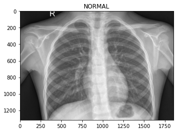
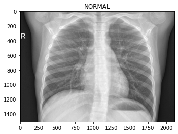
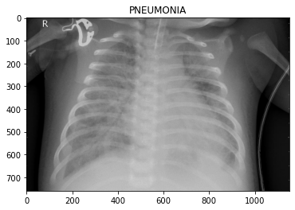

In my last post I used EfficientNet to identify plant diseases. I was surprised at how well this pre-trained model worked, with so few modifications, and I was curious how an approach like this might generalize to other visual image detection problems. In this post I use a similar approach to identify childhood pneumonia from chest x-ray images, using the Chest X-Ray Images (Pneumonia) dataset on Kaggle. Using this approach, I was able to achieve 97% accuracy, 97% precision, and 97% recall.
The code below implements this model. See also my notebook on Kaggle.
# Get data from Kaggle
#!kaggle datasets download paultimothymooney/chest-xray-pneumoniaAddressing some issues with the original dataset
We’ll start by addressing two major issues with the dataset.
I discovered these issues after exploring the data and after my first attempt at validating a trained model:
- The original validation set was WAY too small (only 8 items in each class). This is insufficient, so we need to create our own train-validation split.
- The test set appears to be incorrectly labeled. After my first attempt at training a model I was able to achieve ~99% accuracy on both the training and validation sets, but only ~87% accuracy on the test set. After reading through some of the comments on Kaggle, it seems others have come to a similar conclusion: Some of the test set data is not correctly labeled (e.g., see here). To address this, we’ll create our own train-test split as well.
The first thing I’ll do is remove the existing train/validation/test labels by combining the images into directories for each class, and then I’ll do my own train/test split. Later, I’ll use a parameter in the flow_from_directory function to split the training set into training and validation sets for model training.
import os
from shutil import copyfile
os.makedirs('images/NORMAL', exist_ok=True)
os.makedirs('images/PNEUMONIA', exist_ok=True)
for dirname, _, filenames in os.walk('chest_xray'):
for i, file in enumerate(filenames):
img_class = dirname.split('\\')[2]
copyfile(os.path.join(dirname, file), 'images/' + img_class + '/' + file)Let’s check how many images are in each class, now that we’ve combined them.
It appears we have imbalanced data – i.e., a disproportionate number of items belong to the PNEUMONIA class. When it comes time to evaluate the model it will be important to look at more than just accuracy.
for dirname, _, filenames in os.walk('images'):
if(len(dirname.split("\\")) > 1):
print(dirname + " has " + str(len(filenames)) + " files")images\NORMAL has 1583 files
images\PNEUMONIA has 4273 filesNext, let’s split the new image set into training and test sets.
import numpy as np
from sklearn.model_selection import train_test_split
from shutil import rmtree
rmtree('train') # Remove existing, if re-run
rmtree('test') # Remove existing, if re-run
os.makedirs('train/NORMAL', exist_ok=True)
os.makedirs('train/PNEUMONIA', exist_ok=True)
os.makedirs('test/NORMAL', exist_ok=True)
os.makedirs('test/PNEUMONIA', exist_ok=True)
# Split NORMAL
train, test = train_test_split(os.listdir('images/NORMAL'),
test_size=0.2,
random_state=42)
for img in train:
copyfile(os.path.join('images/NORMAL/', img),
os.path.join('train/NORMAL/', img))
for img in test:
copyfile(os.path.join('images/NORMAL/', img),
os.path.join('test/NORMAL/', img))
# Split PNEUMONIA
train, test = train_test_split(os.listdir('images/PNEUMONIA'),
test_size=0.2,
random_state=42)
for img in train:
copyfile(os.path.join('images/PNEUMONIA/', img),
os.path.join('train/PNEUMONIA/', img))
for img in test:
copyfile(os.path.join('images/PNEUMONIA/', img),
os.path.join('test/PNEUMONIA/', img))Let’s look at some of the images, so we know what we’re dealing with.
from matplotlib import pyplot as plt
from matplotlib import image as mpimg
for dirname, _, filenames in os.walk('train'):
for i, file in enumerate(filenames):
if(i > 1):
break
plt.imshow(mpimg.imread(os.path.join(dirname, file)), cmap='gray')
plt.title(dirname.split('\\')[1])
plt.show()



To the eye of a layman like myself, it’s hard to tell what distinguishes the classes. Maybe the chest area of the pneumonia images are “cloudier”?
Model
We’ll train a model using EfficientNet as a base.
When setting up the flow_from_directory we’ll define a validation_split.
We’ll also add precision and recall to the model metrics.
from tensorflow.keras.preprocessing.image import ImageDataGenerator
SIZE = 128
BATCH = 16
# image augmentations
image_gen = ImageDataGenerator(rescale=1./255,
rotation_range=5,
width_shift_range=0.1,
height_shift_range=0.1,
validation_split=0.2)
# flow_from_directory generators
train_generator = image_gen\
.flow_from_directory('train',
target_size=(SIZE, SIZE),
class_mode="binary",
batch_size=BATCH,
subset='training')
validation_generator = image_gen\
.flow_from_directory('train',
target_size=(SIZE, SIZE),
class_mode="binary",
batch_size=BATCH,
subset='validation')Found 3748 images belonging to 2 classes.
Found 936 images belonging to 2 classes.import efficientnet.keras as efn
from tensorflow.keras.callbacks import Callback
from keras.models import Model
from keras.layers import Dense, GlobalAveragePooling2D
from keras.callbacks import ReduceLROnPlateau, ModelCheckpoint
from tensorflow.keras.metrics import Recall, Precision
# Callbacks
## Keep the best model
mc = ModelCheckpoint('model.hdf5',
save_best_only=True,
verbose=0,
monitor='val_loss',
mode='min')
## Reduce learning rate if it gets stuck in a plateau
rlr = ReduceLROnPlateau(monitor='val_loss',
factor=0.3,
patience=3,
min_lr=0.000001,
verbose=1)
# Model
## Define the base model with EfficientNet weights
model = efn.EfficientNetB4(weights = 'imagenet',
include_top = False,
input_shape = (SIZE, SIZE, 3))
## Output layer
x = model.output
x = GlobalAveragePooling2D()(x)
x = Dense(64, activation="relu")(x)
x = Dense(32, activation="relu")(x)
predictions = Dense(1, activation="sigmoid")(x)
## Compile and run
model = Model(inputs=model.input, outputs=predictions)
model.compile(optimizer='adam',
loss='binary_crossentropy',
metrics=['accuracy', Recall(), Precision()])
model_history = model.fit(train_generator,
validation_data=validation_generator,
steps_per_epoch=train_generator.n/BATCH,
validation_steps=validation_generator.n/BATCH,
epochs=10,
verbose=1,
callbacks=[mc, rlr])Using TensorFlow backend.
Epoch 1/10
235/234 [==============================] - 177s 754ms/step - loss: 0.2632 - accuracy: 0.9015 - recall: 0.9207 - precision: 0.9174 - val_loss: 0.1176 - val_accuracy: 0.8686 - val_recall: 0.9424 - val_precision: 0.9198
Epoch 2/10
235/234 [==============================] - 142s 604ms/step - loss: 0.1449 - accuracy: 0.9472 - recall: 0.9519 - precision: 0.9236 - val_loss: 0.1220 - val_accuracy: 0.9402 - val_recall: 0.9589 - val_precision: 0.9328
Epoch 3/10
235/234 [==============================] - 142s 604ms/step - loss: 0.1388 - accuracy: 0.9493 - recall: 0.9614 - precision: 0.9368 - val_loss: 0.0892 - val_accuracy: 0.9733 - val_recall: 0.9636 - val_precision: 0.9421
Epoch 4/10
235/234 [==============================] - 143s 608ms/step - loss: 0.1263 - accuracy: 0.9626 - recall: 0.9658 - precision: 0.9462 - val_loss: 0.2923 - val_accuracy: 0.9498 - val_recall: 0.9670 - val_precision: 0.9495
Epoch 5/10
235/234 [==============================] - 142s 603ms/step - loss: 0.1078 - accuracy: 0.9664 - recall: 0.9680 - precision: 0.9522 - val_loss: 1.9153 - val_accuracy: 0.7938 - val_recall: 0.9639 - val_precision: 0.9547
Epoch 6/10
235/234 [==============================] - 142s 603ms/step - loss: 0.0930 - accuracy: 0.9685 - recall: 0.9602 - precision: 0.9567 - val_loss: 0.0131 - val_accuracy: 0.9712 - val_recall: 0.9621 - val_precision: 0.9588
Epoch 7/10
235/234 [==============================] - 142s 604ms/step - loss: 0.0762 - accuracy: 0.9760 - recall: 0.9635 - precision: 0.9608 - val_loss: 0.0028 - val_accuracy: 0.9348 - val_recall: 0.9639 - val_precision: 0.9625
Epoch 8/10
235/234 [==============================] - 142s 603ms/step - loss: 0.0817 - accuracy: 0.9728 - recall: 0.9646 - precision: 0.9636 - val_loss: 0.0415 - val_accuracy: 0.9562 - val_recall: 0.9659 - val_precision: 0.9644
Epoch 9/10
235/234 [==============================] - 142s 603ms/step - loss: 0.0833 - accuracy: 0.9731 - recall: 0.9668 - precision: 0.9651 - val_loss: 0.2688 - val_accuracy: 0.9466 - val_recall: 0.9679 - val_precision: 0.9654
Epoch 10/10
235/234 [==============================] - 142s 603ms/step - loss: 0.0750 - accuracy: 0.9747 - recall: 0.9689 - precision: 0.9657 - val_loss: 0.1207 - val_accuracy: 0.9615 - val_recall: 0.9697 - val_precision: 0.9663Training performance
# Plot training and validation accuracy by epoch
acc = model_history.history['accuracy']
val_acc = model_history.history['val_accuracy']
epochs = range(len(acc))
plt.plot(epochs, acc, 'r', label='Training accuracy')
plt.plot(epochs, val_acc, 'b', label='Validation accuracy')
plt.title('Training and validation accuracy')
plt.legend()
plt.figure()<Figure size 432x288 with 0 Axes>
<Figure size 432x288 with 0 Axes>Model evaluation
Now we’ll evaluate the model using the test set.
test_datagen = ImageDataGenerator(rescale=1./255,
rotation_range=5,
width_shift_range=0.1,
height_shift_range=0.1)
test_generator = test_datagen.flow_from_directory(
directory="test",
target_size=(SIZE, SIZE),
class_mode="binary",
shuffle=False,
batch_size=BATCH
)
preds = model.predict_generator(generator=test_generator) # get proba predictions
labels = 1*(preds > 0.5) # convert proba to classesFound 1172 images belonging to 2 classes.Confusion matrix
from sklearn.metrics import confusion_matrix
from mlxtend.plotting import plot_confusion_matrix
CM = confusion_matrix(test_generator.classes, labels)
fig, ax = plot_confusion_matrix(conf_mat=CM , figsize=(5, 5))
plt.show()
Classification report
from sklearn.metrics import classification_report
print(classification_report(test_generator.classes, labels)) precision recall f1-score support
0 0.95 0.92 0.94 317
1 0.97 0.98 0.98 855
accuracy 0.97 1172
macro avg 0.96 0.95 0.96 1172
weighted avg 0.97 0.97 0.97 1172